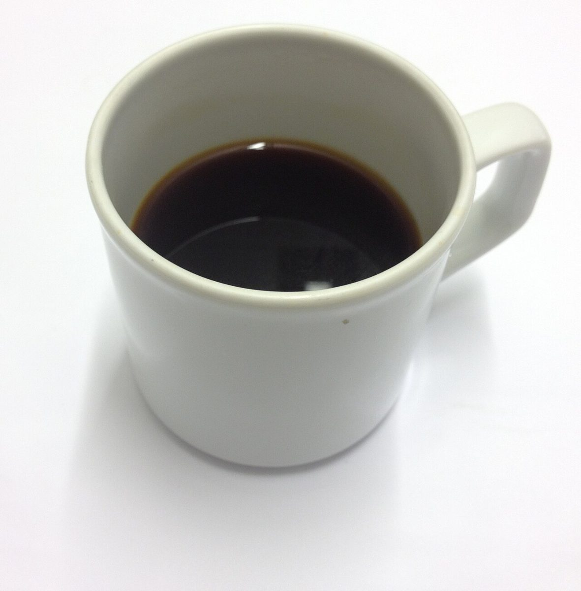

カフェ / 鹿児島県鹿児島市
LiSACOFFEE STAND
ZIP892-0821
鹿児島県鹿児島市名山町にあるカフェ「LiSA COFFEE STAND」のご案内ページです。営業時間やメニューなど詳しいことは準備中。まずはInstagramをのぞいてみてください。

制作側の連想
「スタンド」から、ひと休みの給油所へ
店名の由来は分かりません。制作側は「STAND」という言葉から、車の給油所(ガソリンスタンド)を連想しました。ふらりと立ち寄って、ひと息つく場所。そこで、このページは給油メーターの目盛り E(空)から F(満タン)まで、コーヒーが「入っていく」道のりを並べる作りにしています。お店の理念・由来とは無関係の、制作側の連想です。
給油メーター
E から F まで、5つの目盛り。
写真は名山町やお店のものではなく、国外・撮影地不明のフリー素材です。お店が提供する内容を示すものではありません。
- E

生豆(イメージ) 生豆
- 1/4

焙煎豆(イメージ) 焙煎
- 1/2

ドリッパー(イメージ) ドリッパー
- 3/4

抽出(イメージ) 抽出
- F

満タンの一杯(イメージ) 満タン
ご案内
お店のこと(確認できたものだけ)
| 所在地 | 〒892-0821 鹿児島県鹿児島市名山町3-8 |
|---|---|
| 電話 | なし |
| 営業時間 | 準備中 |
| 定休日 | 準備中 |
| ご予約 | 準備中 |
| 駐車場 | 準備中 |
| SNS | Instagram @lisacoffeestand_meizan |